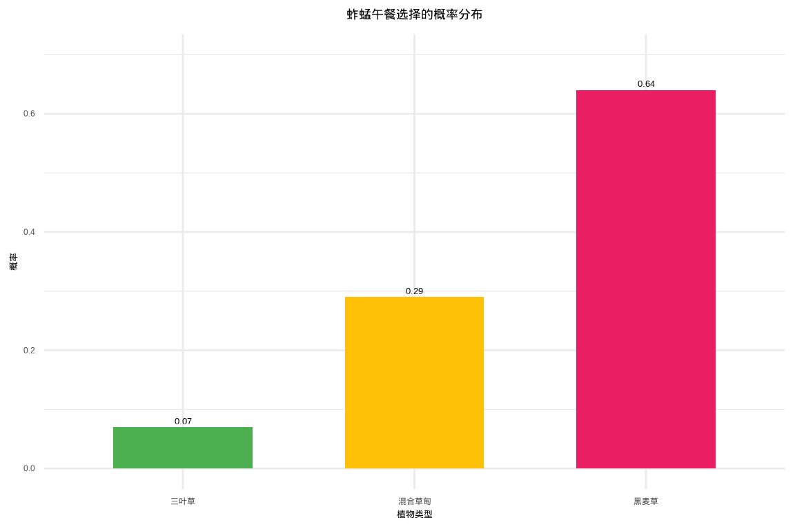

2 概率与分布
2.1 概率
2.1.1 一只蚱蜢的午餐
想象一下，你是校园里一只普通的蚱蜢。在你面前，是三片不同的草地：一片是茂盛的黑麦草，一片是点缀着雏菊的混合草甸，另一片则是以三叶草为主。对你来说，这不仅仅是风景，而是你的”餐桌”。现在，我要向你提出一个看似简单，实则充满了不确定性的问题：你下一顿午餐，会选择在哪一种植物上进食？
这个简单的问题背后，隐藏着生态学研究的核心挑战——如何理解和量化生物行为中的不确定性。你的选择可能受到多种因素的影响：黑麦草的高营养价值、混合草甸的隐蔽性、三叶草的特殊口感，甚至是当天的天气、你的饥饿程度，或是周围是否有捕食者。每一个微小的变量都可能改变你的最终决定。
作为一名生态学从业者，我的任务就是量化你的这种”选择偏好”。而这个”偏好”，本质上就是概率——一个介于0和1之间的数字，用来描述某个不确定事件（蚱蜢选择某种植物）发生的可能性。概率为0意味着绝不可能，概率为1意味着必然发生。但现实世界中的概率往往介于这两个极端之间，反映了生物决策中的复杂性和随机性。
那么，我该如何度量和理解你这只蚱蜢的”选择概率”呢？这不仅仅是简单的计数问题，而是需要建立数学模型来描述你的行为模式。概率理论为我们提供了三种不同的视角来理解这种不确定性：基于理想假设的古典概率、基于实际观察的频率概率，以及能够结合新证据不断更新认知的贝叶斯概率。每一种方法都有其独特的价值和适用场景，共同构成了我们理解自然界的数学工具箱。
2.1.2 理想的猜测——古典概率
一开始，我没有任何观察数据。我只能基于“公平原则”进行一个理想化的猜测。我发现，你活动的区域里，黑麦草、混合草甸和三叶草的面积恰好相等。于是，我假设你选择任何一种植物的可能性都是完全一样的。
- 这就是古典概率（先验概率）。 它的核心是“等可能性”。在这个理想模型里，有三种可能的结果，且每一种结果出现的可能性相同。
- 计算公式是： \[P(\text{蚱蜢选择黑麦草}) = \frac{\text{有利于该事件的结果数}}{\text{所有可能的结果数}} = \frac{1}{3}\]
- 这种概率源于逻辑推理，而非实际数据。它简洁优美，但现实世界往往并非如此“公平”。毕竟，你可能就是偏爱某种口味呢？
2.1.2.1 核心思想：等可能性
想象一下，你正在和一位朋友玩一个完全公平的掷骰子游戏。骰子质地均匀，形状完美。那么，在掷出之前，你会认为掷出“1点”的可能性有多大？你的直觉很可能会告诉你：六分之一。
支撑这个直觉的，就是古典概率（也称为先验概率）的思维方式。它是概率论中最古老、最直观的定义，源于对如赌博等机会游戏的研究。古典概率的历史可以追溯到17世纪，当时法国数学家布莱兹·帕斯卡和皮埃尔·德·费马通过书信往来，共同解决了赌博中的概率问题，为现代概率论奠定了基础。
古典概率的核心前提是 “等可能性”。即一个随机试验的所有可能结果，发生的可能性必须完全相同。这个假设看似简单，实则蕴含着深刻的数学哲学思想。等可能性的概念建立在对称性原则之上。当我们说一个骰子的六个面”等可能”时，实际上是在说这个骰子在几何形状、质量分布等方面具有完美的对称性。这种对称性确保了每个面朝上的物理条件完全相同。
在生态学中，等可能性的假设意味着我们暂时忽略了所有可能影响生物选择的因素，将系统简化为一个完全随机的过程。这种简化虽然不完美，但为我们提供了一个理论基准，帮助我们理解”如果世界是完全随机的，会发生什么”。
2.1.2.2 定义与公式
在满足“等可能性”的试验中，我们称每个单一的可能结果为一个 “基本事件” 。所有基本事件构成的集合，就是 “样本空间”。样本空间的概念是概率论的基础，它定义了所有可能发生的结果。
构建样本空间需要仔细考虑试验的所有可能结果。例如，在蚱蜢选择植物的例子中，样本空间包含三个基本事件：{选择黑麦草，选择混合草甸，选择三叶草}。每个基本事件都是互斥且完备的——互斥意味着不可能同时发生两个事件，完备意味着涵盖了所有可能性。
古典概率的定义公式简洁而优美：
\[P(A) = \frac{\text{事件A包含的基本事件个数}}{\text{样本空间中基本事件的总数}}\]
\(P(A)\)： 事件A发生的概率。分子： 你关心的事件A包含了多少种可能的结果。分母： 整个试验一共有多少种可能的结果。
这个公式计算出的概率，是一个介于0和1之间的数。\(P(A)=0\)表示事件A不可能发生；\(P(A)=1\)表示事件A必然发生。概率的归一化条件要求所有基本事件的概率之和等于1。
2.1.2.3 概率的三个基本属性
无论采用哪种概率定义（古典、频率或贝叶斯），概率都必须满足三个基本公理，这些公理由俄罗斯数学家安德雷·柯尔莫哥洛夫在1933年提出，为现代概率论奠定了坚实的数学基础。
公理1：非负性 对于任意事件A，其概率总是非负的： \[P(A) \geq 0\]
这个公理确保了概率的合理性。在生态学中，这意味着任何生态事件的发生概率都不可能为负值，无论这个事件多么罕见或不可能。
公理2：规范性 整个样本空间的概率为1： \[P(\Omega) = 1\]
其中\(\Omega\)表示样本空间，即所有可能结果的集合。这个公理表明”必然事件”的概率为1。在蚱蜢的例子中，样本空间包含三种植物选择，因此\(P(\text{选择任意植物}) = 1\)。
公理3：可加性 对于任意两个互斥事件A和B（即A和B不能同时发生）： \[P(A \cup B) = P(A) + P(B)\]
这个公理可以推广到有限个或可数无限个互斥事件。在生态学中，这意味着如果两个生态事件不可能同时发生（如”蚱蜢同时选择黑麦草和混合草甸”），那么它们中至少有一个发生的概率等于各自概率之和。
这三个公理共同构成了概率论的数学基础，确保了概率计算的逻辑一致性。从这些基本公理出发，我们可以推导出概率的所有其他性质，如： - \(P(A^c) = 1 - P(A)\)（互补事件的概率） - 如果\(A \subseteq B\)，则\(P(A) \leq P(B)\)（概率的单调性） - \(P(A \cup B) = P(A) + P(B) - P(A \cap B)\)（一般加法公式）
这些性质在生态学研究中具有重要的应用价值，帮助我们建立合理的概率模型并进行正确的统计推断。
2.1.2.4 生态学中的古典概率应用
尽管古典概率的假设很强，但在某些生态学场景中仍然有其应用价值：
1. 理想化的种群分布模型
当我们研究物种在栖息地中的分布时，可以先建立一个”等可能性”的基准模型。例如，假设一个森林中有三种不同类型的微生境（阳光充足区、半阴区、全阴区），我们可以先假设物种在这三种生境中出现的概率相等，然后与实际观测数据进行比较。这种比较可以帮助我们识别物种的真实偏好。
2. 随机抽样设计
在生态调查中，我们经常需要随机选择样方位置。如果样方选择过程真正实现了”等可能性”，那么每个位置被选中的概率应该完全相同。这种设计确保了样本的代表性，避免了选择偏差。
3. 遗传学中的孟德尔定律
在种群遗传学中，孟德尔的遗传定律实际上就是基于古典概率的等可能性假设。当亲本的基因型确定后，子代获得特定基因组合的概率可以通过古典概率计算。
2.1.2.5 古典概率的局限性
尽管古典概率模型非常优美，但它的”理想化”也恰恰是它在现实应用中的主要局限：
1. “等可能性”假设过于苛刻
现实世界中，很多情况不满足等可能性。生态系统的复杂性使得”等可能性”的假设往往过于简化：
回到蚱蜢的例子： 我们能说蚱蜢选择黑麦草、混合草甸和三叶草的可能性完全相等吗？几乎不能！植物的营养价值、口感、防御性化学物质、空间分布、季节变化等因素都存在差异，这些都会破坏”等可能性”假设。
一枚实际硬币： 可能因工艺瑕疵导致正面和反面出现的概率并非精确的50%。研究表明，大多数硬币实际上有51%-49%的轻微偏差。
一只青蛙选择池塘： 池塘的大小、水深、水质、是否有天敌、食物丰富度等因素必然会影响其选择，使得”等可能性”的假设不成立。
2. 样本空间必须是有限集合
古典概率要求可能的结果是有限可数的。对于连续性的问题（如蚱蜢的精确跳跃距离是1.253米），因为结果有无限多个，古典概率便无能为力。生态学中的许多测量值都是连续变量，如温度、湿度、生物量等，这些都需要连续概率分布来描述。
3. 无法处理主观概率
古典概率是客观的，基于计数。但它无法处理如”我认为明天会下雨的可能性是70%“这种基于个人知识、经验和信念的主观判断。在生态学预测中，专家意见和经验判断往往很重要，但这些主观因素无法用古典概率来量化。
4. 忽略历史依赖性和学习效应
古典概率假设每次试验都是独立的，但生物行为往往具有记忆性和学习能力。如果蚱蜢昨天在黑麦草上获得了丰富的营养，它今天更可能再次选择黑麦草。这种历史依赖性破坏了古典概率的独立性假设。
2.1.2.6 从古典概率到现代概率论
古典概率虽然简单，但它为现代概率论的发展奠定了基础。20世纪初，俄罗斯数学家安德雷·柯尔莫哥洛夫建立了概率论的公理化体系，将概率定义为满足特定性质的测度函数。这个公理化体系能够同时涵盖古典概率、几何概率和统计概率，为概率论提供了坚实的数学基础。
总结来说，古典概率如同几何学中的完美圆规和直尺，它描绘了一个规则、公平、易于理解的理想世界。它是我们概率之旅的起点，教会我们”计数”的重要性，培养了我们对随机现象的基本直觉。当我们告别这个理想世界，步入充满复杂性和不确定性的真实生态学领域时，频率概率和贝叶斯概率等更强大的工具便会接过接力棒，帮助我们更好地刻画那只真实蚱蜢的、受到多种因素影响的午餐选择。古典概率的价值不在于它的现实准确性，而在于它为我们的思维提供了一个清晰的起点和参照系。
2.1.3 数据的语言——频率概率
为了了解真相，我决定进行实地观察。我在一周里，每天中午记录你进食的位置，一共记录了70次选择。数据如下：45次在黑麦草上，20次在混合草甸上，5次在三叶草上。
- 这时，我使用的是频率概率。 它的核心思想是：一个事件发生的概率，等于它在长期重复试验中出现的频率。
- 度量方式为： \(P(\text{选择黑麦草}) \approx \frac{45}{70} \approx 0.64\)； \(P(\text{选择混合草甸}) \approx \frac{20}{70} \approx 0.29\)； \(P(\text{选择三叶草}) \approx \frac{5}{70} \approx 0.07\)。
- 这些数字（0.64， 0.29， 0.07）就是基于客观数据对你进食偏好的度量。它们告诉我，你的偏好并非均等，而是对黑麦草有强烈的倾向性。大数定律在这里默默起作用：观察的次数越多，这个频率就会越稳定地接近你内在的、真实的”偏好概率”。
2.1.3.1 核心思想：经验主义与重复试验
频率概率（也称为统计概率）的核心思想源于经验主义哲学——知识来自于观察和经验。与古典概率的”先验”推理不同，频率概率是”后验”的，它基于实际收集的数据。
大数定律的数学基础
大数定律是频率概率的理论支柱。这个定律告诉我们：当试验次数足够多时，事件发生的频率会稳定地趋近于其真实的概率。这种稳定性不是偶然的，而是概率论的基本规律。
在生态学中，频率概率意味着我们通过系统的观察来了解生物行为的真实模式。每一次观察都是对”真实概率”的一次逼近，随着观察次数的增加，我们的估计会越来越准确。
频率概率的现实类比
就像天气预报：气象学家通过分析多年的气象数据，得出某地区在特定季节下雨的概率。
就像质量控制：工厂通过检测大量产品的质量，估计产品合格率。
就像医学研究：通过大规模的临床试验，确定某种药物的有效率。
频率概率让我们从”理想世界”走向”真实世界”，用数据说话，用事实说话。
2.1.3.2 定义与计算方法
频率概率的定义基于长期重复试验的思想。对于一个随机事件A，其频率概率定义为：
\[P(A) = \lim_{n \to \infty} \left( \frac{\text{事件A发生的次数}}{\text{总试验次数}} \right)\]
其中\(n\)表示试验的总次数。在实际应用中，我们通常用有限次试验的频率来近似真实的概率：
\[P(A) \approx \frac{\text{事件A发生的次数}}{\text{总试验次数}}\]
频率概率的计算步骤
设计观察方案：确定观察的时间、地点、方法，确保观察的系统性和代表性。
收集数据：按照设计方案进行重复观察，记录每次试验的结果。
统计频率：计算事件发生的次数与总观察次数的比值。
评估可靠性：根据样本大小评估估计的可靠性，样本越大，估计越准确。
样本大小的重要性
在频率概率中，样本大小（观察次数）至关重要。小样本可能受到随机波动的影响，而大样本能够更好地反映真实的概率分布。生态学研究通常需要足够的样本量来获得可靠的估计。
2.1.3.3 生态学中的频率概率应用
频率概率在生态学研究中有着广泛的应用：
1. 种群密度估计
通过样方法调查物种在特定区域的分布频率，可以估计整个种群的密度。例如，在100个样方中发现目标物种的样方比例为30%，可以推断该物种在整个区域的分布概率约为30%。
2. 行为生态学研究
通过观察动物行为的频率，可以量化其行为偏好。例如，观察鸟类在不同树种上筑巢的频率，可以了解其对栖息地的选择偏好。
3. 物种分布模型
基于物种在不同环境条件下的出现频率，可以建立物种分布模型，预测物种在未调查区域的分布概率。
4. 生态风险评估
通过分析历史数据中不利事件（如物种灭绝、生态系统崩溃）的发生频率，可以评估未来的生态风险。
2.1.3.4 频率概率的优势与局限性
频率概率方法在生态学研究中展现出显著的优势。首先，其客观性确保了概率估计基于实际观察数据而非主观臆断，这为生态学研究提供了坚实的实证基础。通过系统记录生物行为或环境变化，研究者能够获得反映真实世界规律的量化结果。其次，频率概率具有可验证性，任何研究者都可以通过重复相同的观察或实验来验证结果的可靠性，这符合科学研究的可重复性原则。在实用性方面，频率概率适用于各种现实世界的概率估计问题，从物种分布调查到种群动态监测，都能提供有效的量化工具。最重要的是，频率概率具有渐进精确性，随着样本量的增加，根据大数定律，频率估计会越来越接近真实的概率值，这种自我修正的特性使其成为长期生态监测的理想工具。
然而，频率概率方法也存在明显的局限性。需要大量数据是其最突出的限制，为了获得可靠的估计，通常需要大量的观察数据，这在某些稀有物种或难以观察的行为研究中可能难以实现。无法处理一次性事件是另一个重要局限，对于无法重复的事件（如特定物种的灭绝、罕见自然灾害等），频率概率难以提供有意义的估计。历史依赖性使得基于历史数据的概率估计可能无法准确反映未来的变化，特别是在环境快速变化的背景下，过去的数据可能无法预测未来的趋势。此外，样本偏差问题不容忽视，如果样本选择不具有代表性，或者观察过程中存在系统性偏差，频率估计会产生误导性的结果。这些局限性提醒我们在应用频率概率时需要谨慎考虑其适用条件，并在必要时结合其他概率方法进行综合分析。
2.1.4 动态的更新——贝叶斯概率
然而，故事还没结束。一位植物学家同学告诉我，昨天刚下过雨，三叶草在雨后会特别鲜嫩多汁，营养价值更高。这条新信息（证据）改变了我对你的判断。我不能完全忽略我之前70次观察的结论（先验知识），但我也必须考虑“雨后三叶草更诱人”这个新事实。
- 贝叶斯概率登场了。 它是一种“信仰”的概率，代表着在考虑了新证据之后，我对某个假设（你会选择三叶草）的置信度。
- 它的思维是动态更新的： 我原来的信念（\(P(\text{选择三叶草}) = 0.07\)）是先验概率。得到”昨天下过雨”这个证据后，我利用一个公式（贝叶斯定理）将先验概率和证据结合起来，得到一个更新后的后验概率。
- 这个后验概率可能变成 \(P(\text{选择三叶草} \mid \text{昨天下过雨}) = 0.25\)。这意味着，在”雨后”这个条件下，我认为你选择三叶草的概率从7%显著提升到了25%。贝叶斯概率让我们的认知能够随着新证据的出现而不断进化，更像是一种科学的学习过程。
2.1.4.1 核心思想：主观信念与证据更新
贝叶斯概率（也称为主观概率）的核心思想源于认识论哲学——概率是对不确定性的主观度量。与频率概率的”客观”统计不同，贝叶斯概率是”主观”的，它反映了在给定证据条件下对某个假设的置信程度。
贝叶斯定理的数学基础
贝叶斯定理是贝叶斯概率的理论核心。这个定理提供了一个数学框架，用于在获得新证据时更新我们对某个假设的信念。其基本形式为：
\[P(H|E) = \frac{P(E|H) \times P(H)}{P(E)}\]
其中：
- \(P(H|E)\) 是后验概率（在证据E条件下假设H的概率）
- \(P(H)\) 是先验概率（在获得证据前对假设H的初始信念）
- \(P(E|H)\) 是似然函数（在假设H成立时观察到证据E的概率）
- \(P(E)\) 是证据的边际概率
贝叶斯概率的哲学基础
贝叶斯概率体现了”学习”的本质。我们不是从零开始认识世界，而是基于已有的知识（先验），结合新的观察（证据），不断更新我们的认知（后验）。这种思维方式更接近人类实际的认知过程。
贝叶斯概率的现实类比
就像医学诊断：医生基于患者的症状（证据）更新对疾病的判断（假设）。
就像法庭审判：陪审团基于证据不断更新对被告有罪或无罪的信念。
就像天气预报：气象学家基于新的气象数据更新对天气变化的预测。
贝叶斯概率让我们从”静态世界”走向”动态世界”，用不断更新的信念来应对变化的环境。
2.1.4.2 定义与计算方法
贝叶斯概率的核心是贝叶斯定理，它提供了一个系统的方法来更新概率估计：
贝叶斯定理的完整形式
\[P(H|E) = \frac{P(E|H) \times P(H)}{P(E|H) \times P(H) + P(E|\neg H) \times P(\neg H)}\]
其中\(\neg H\)表示假设H不成立。这个公式考虑了所有可能的情况，确保概率的归一化。
贝叶斯更新的步骤
确定先验概率：基于已有知识或经验，确定对假设的初始信念\(P(H)\)。
计算似然函数：评估在假设成立时观察到证据的概率\(P(E|H)\)。
计算证据概率：计算观察到证据的总体概率\(P(E)\)。
计算后验概率：使用贝叶斯定理更新信念，得到\(P(H|E)\)。
先验概率的选择
在贝叶斯分析中，先验概率的选择很重要。常用的先验包括： - 无信息先验：当缺乏先验知识时使用 - 共轭先验：数学上方便计算的后验分布 - 经验先验：基于历史数据或专家意见
2.1.4.3 生态学中的贝叶斯概率应用
贝叶斯概率在现代生态学研究中越来越重要：
1. 物种分布模型
结合专家知识和观测数据，建立更准确的物种分布预测模型。先验可以反映物种的生态习性，后验则结合了实际的分布数据。
2. 种群动态预测
基于历史种群数据和环境变化信息，预测未来种群数量的变化趋势。贝叶斯方法能够处理参数的不确定性。
3. 保护优先级评估
结合多种证据（如栖息地质量、种群趋势、威胁因素）来评估物种的保护优先级。
4. 生态风险评估
在数据有限的情况下，结合专家判断和有限观测来评估生态风险。
5. 模型选择与平均
使用贝叶斯模型平均方法，综合考虑多个竞争模型的预测结果。
2.1.4.4 贝叶斯概率的优势与局限性
贝叶斯概率方法在现代生态学研究中展现出独特的优势。其灵活性体现在能够有机地结合先验知识和新的观测证据，这种动态更新的特性使其特别适合处理环境变化和物种适应性研究。通过贝叶斯定理，研究者可以将专家经验、历史数据与最新的实地观察相结合，形成更加全面的认知。不确定性量化是贝叶斯方法的另一重要优势，它不仅提供点估计，还能明确表达参数的不确定性范围，这对于生态风险评估和保护决策具有重要意义。在小样本适用性方面，贝叶斯方法在数据有限的情况下仍然能够发挥作用，这对于研究稀有物种或难以大规模观察的生态现象尤为宝贵。模型复杂性处理能力使贝叶斯方法能够应对生态学中常见的多层次、多变量复杂系统，如考虑个体差异、空间异质性和时间动态的生态模型。最重要的是，贝叶斯方法提供决策支持，直接输出决策所需的概率信息，如物种灭绝风险、保护措施效果等，为生态管理提供科学依据。
然而，贝叶斯概率方法也存在不容忽视的局限性。主观性是其最受争议的方面，先验概率的选择往往依赖于研究者的主观判断，不同专家可能会给出不同的先验设定。计算复杂性是实际应用中的主要障碍，复杂的贝叶斯模型需要大量的计算资源，特别是使用马尔可夫链蒙特卡洛方法时，计算时间可能相当可观。先验敏感性问题意味着结果可能对先验选择高度敏感，不恰当的先验设定可能导致有偏的结论。收敛问题是MCMC方法特有的挑战，在复杂模型中可能出现收敛困难或收敛到局部最优解的情况。此外，解释难度限制了贝叶斯方法的普及，后验分布的理解和解释需要研究者具备相当的统计背景，这在一定程度上阻碍了其在生态学实践中的广泛应用。这些局限性提示我们在使用贝叶斯方法时需要谨慎处理先验设定，并充分考虑计算可行性和结果解释的清晰性。
2.2 随机变量与分布
2.2.1 从事件到变量——随机变量与概率分布
现在，我想更系统地描述你这只”蚱蜢”的行为。作为一名生态学研究者，我面对的不仅仅是描述性的观察记录，而是需要建立一个能够量化、预测和分析的数学模型。“蚱蜢选择哪种植物进食”这个看似简单的行为，实际上蕴含着复杂的决策过程，受到营养需求、环境因素、个体偏好等多重影响。我需要一个强大的数学工具来捕捉这种不确定性，将模糊的行为模式转化为精确的概率描述。
于是，我引入随机变量的概念，将其命名为X。随机变量是概率论中的核心工具，它就像一个数学翻译器，将现实世界中的随机现象转化为数学语言。我精心定义：当X=1时，代表你选择了营养丰富的黑麦草；当X=2时，代表你选择了环境复杂的混合草甸；当X=3时，代表你选择了相对稀少的三叶草。这种编码方式不仅简化了描述，更重要的是为后续的数学分析奠定了基础。
随机变量的奇妙之处在于它的双重性：在每次具体观察之前，X的取值是完全不确定的——它可能是1、2或3中的任意一个，这种不确定性正是生态系统中生物行为的本质特征。然而，这种不确定性并非毫无规律可言。通过长期的观察和数据积累，我发现每个可能的取值都有其特定的发生概率。这种概率分布就像是你行为模式的”数学指纹”，精确地刻画了你在不同环境条件下的选择倾向。随机变量的引入，使我们能够从定性描述迈向定量分析，为理解生物决策机制提供了强有力的数学框架。
2.2.1.1 概率分布
接下来，我把随机变量X所有可能的取值及其对应的概率，整理成一张表。
| 随机变量 X 的取值 (植物类型) | 概率 P(X) |
|---|---|
| 1 (黑麦草) | 0.64 |
| 2 (混合草甸) | 0.29 |
| 3 (三叶草) | 0.07 |
这张表，就构成了一个概率分布！它完整地描绘了你的选择偏好全景。它清晰地显示，你最可能去哪（黑麦草），最不可能去哪（三叶草）。
如果我画成柱状图，就得到了一个概率分布图，直观地展示了这种”分布”情况。

2.2.1.2 累积概率分布：从可能性到确定性
除了了解每种植物被选择的概率，我们有时还需要回答这样的问题：“蚱蜢选择黑麦草或混合草甸的概率是多少？”或者”选择价值较低的植物（三叶草）的概率是多少？“这些问题引导我们认识累积概率分布。
累积概率分布描述的是随机变量取值小于或等于某个特定值的概率。对于我们的蚱蜢午餐选择问题，我们可以构建如下的累积分布：
| 随机变量 X 的取值 | 概率 P(X) | 累积概率 F(x) = P(X ≤ x) |
|---|---|---|
| 1 (黑麦草) | 0.64 | 0.64 |
| 2 (混合草甸) | 0.29 | 0.93 |
| 3 (三叶草) | 0.07 | 1.00 |
这里的累积概率告诉我们： - 蚱蜢选择黑麦草的概率是 0.64 - 蚱蜢选择黑麦草或混合草甸的概率是 0.64 + 0.29 = 0.93 - 蚱蜢选择任意一种植物的概率是 1.00（必然事件）

累积概率分布图呈现为阶梯函数，在每个可能的取值处跳跃，跳跃的高度等于该取值的概率。这种分布特别有用，因为它：
- 回答区间概率问题：我们可以直接读出 P(X ≤ 2) = 0.93
- 计算任意事件的概率：P(X > 2) = 1 - P(X ≤ 2) = 1 - 0.93 = 0.07
- 提供决策支持：如果我们想知道”蚱蜢选择营养价值较高的植物（黑麦草或混合草甸）的概率”，累积分布直接给出了答案：0.93
在生态学中，累积概率分布广泛应用于风险评估、资源分配决策和种群管理策略制定。
2.2.2 从一顿午餐到行为法则：离散随机变量的分布家族
我们已经成功地为蚱蜢的午餐偏好创建了一个数学模型。我们定义了一个随机变量X，它就像一个聪明的代理人，将“吃哪种植物”这个文字问题，转化成了“X等于1，2，还是3？”这个数学问题。
离散型随机变量的核心特征就是：它的可能取值是有限个或可数的无限个（就像整数一样，可以一个一个数出来）。蚱蜢的选择（1，2，3）就是有限的、分立的点，而不是连续的光滑区间。我们整理出的那张概率表格，正是这个随机变量的概率分布。它如同一份“行为密码”，精确地告诉我们这只蚱蜢的习性。
不过，自然界的奥秘在于，许多看似不同的行为背后，可能隐藏着同一种“底层法则”。接下来，就让我们认识几位在生态学中无处不在的离散分布“明星”。
2.2.2.1 伯努利分布：一个”是”或”否”的终极问题
故事开端： 现在，我不再关心蚱蜢具体吃了三种植物中的哪一种，而是问一个更简单的问题：它这次进食是否选择了黑麦草？ 结果只有两种：“是”（成功） 或 “否”（失败）。这种简化的视角让我们能够专注于最本质的二元选择问题。
数学定义： 伯努利分布是描述单次伯努利试验结果的概率分布。伯努利试验具有三个基本特征： 1. 每次试验只有两种可能的结果（成功/失败） 2. 每次试验中成功的概率\(p\)保持不变 3. 各次试验相互独立
概率函数表达式： 伯努利分布的概率质量函数为：
\[P(X = x) = \begin{cases} p & \text{如果 } x = 1 \\ 1-p & \text{如果 } x = 0 \end{cases}\]
或者更简洁地表示为： \[P(X = x) = p^x(1-p)^{1-x}, \quad x = 0,1\]
其中，\(X\)是伯努利随机变量，\(p\)是成功的概率（\(0 \leq p \leq 1\)）。

生态学肖像：
伯努利分布在生态学中无处不在，它描述的是那些具有二元结局的自然现象：
- 一颗种子是否发芽？ - 发芽（成功）或不发芽（失败）
- 一只雏鸟能否成功活到离巢？ - 存活（成功）或死亡（失败）
- 一次野外调查中，一个样方里是否出现了目标物种？ - 出现（成功）或不出现（失败）
- 一只昆虫是否被天敌捕食？ - 被捕食（成功）或逃脱（失败）
- 一片叶子是否被昆虫取食？ - 被取食（成功）或完好（失败）
生态学意义：
伯努利分布虽然简单，但它是构建更复杂生态学模型的基础。许多重要的生态学分布，如二项分布、几何分布、负二项分布等，都是建立在多次独立伯努利试验的基础之上。理解伯努利分布有助于我们：
- 量化二元生态过程：将定性的生态现象转化为可量化的概率
- 建立基准模型：为更复杂的生态模型提供理论基础
- 进行统计推断：基于二元数据估计生态过程的参数
- 风险评估：评估生态事件发生的可能性
伯努利分布的美妙之处在于它的简洁性和普适性。尽管生态系统的复杂性远超简单的二元选择，但通过将复杂问题分解为基本的伯努利试验，我们能够逐步建立起理解自然界的数学模型框架。
2.2.2.2 二项分布：重复“是非题”的计数法则
故事延续： 现在，我连续观察蚱蜢的10次进食选择。每一次选择，都是一个独立的伯努利试验（是否吃黑麦草）。我关心的问题是：在这10次观察中，它总共有多大概率有恰好7次选择了黑麦草？或者，至少有8次？
分布肖像： 二项分布描述的就是在$n$次独立的伯努利试验中，出现"成功"次数（记为$k$）的概率分布。它有两个参数：试验次数 $n$ 和每次成功的概率 $p$。
生态学肖像：
播种100颗同种种子，最终成功发芽的数量$k$服从二项分布（$n=100$， $p=$发芽率）。
从一个大种群中随机捕获并标记50只动物，放回后再次随机捕获50只，其中被标记个体的数量$k$也服从二项分布。这正是标记重捕法的理论核心！
二项分布帮我们回答的是：在固定的尝试次数下，获得特定次数“成功”的概率有多大。2.2.2.3 泊松分布：罕见事件的“低语者”
故事新篇： 这次，我不固定观察次数，而是固定观察时间。我坐在草地上，用一个小时的时间，记录下这只蚱蜢做出剧烈警戒性跳跃的次数。这种跳跃并不频繁，可能一次，可能两次，也可能一次都没有。在一个很短的时间间隔内，发生一次跳跃的概率很小，且事件彼此独立。
分布肖像： 泊松分布专门用来描述单位时间、单位面积或单位体积内，稀有事件发生次数的概率分布。它的特点是只有一个参数 $\lambda$，它代表了事件发生的平均速率（例如，平均每小时跳跃2.5次）。它的分布形状由$\lambda$决定，$\lambda$较小则偏向右侧，$\lambda$增大后逐渐变得对称。
生态学肖像：
一平方米的森林样地中，某种珍稀兰花的株数。
一台红外相机在一天内，拍摄到某种神秘夜行兽的次数。
一毫升海水中的浮游生物数量。
泊松分布是生态学中描述物种多度、空间分布点模式的黄金标准之一。2.2.2.4 几何分布：等待“第一次成功”的耐心
故事视角转换： 想象现在是清晨，蚱蜢开始了它的第一次觅食。我好奇的是：它需要尝试多少次，才能第一次成功吃到它最爱的黑麦草？ 也许第一次就成功了（X=1），也许前两次都去了别处，第三次才成功（X=3）。
分布肖像： 几何分布描述的是在一系列独立的伯努利试验中，首次获得"成功"所需要的试验次数。它的参数仍然是每次试验的成功概率 $p$。$p$越大，意味着你很快就能成功，所以需要等待的次数的期望值越小。
生态学肖像：
一只捕食者需要巡视几个洞穴，才能发现第一个有猎物的。
一只传粉昆虫需要访问多少朵花，才能第一次成功获得花蜜。
几何分布刻画的是那种“守得云开见月明”的等待过程。2.2.3 更大的世界-连续随机变量
从跳跃到体长：描绘连续世界的概率地图
我们已经为蚱蜢的“午餐选择”绘制了一张清晰的概率分布图，那是由一根根独立的柱子组成的，因为它的选择是分门别类的（植物A、B、C）。这类变量被称为离散型随机变量，它们的取值是可数的。
但现在，让我们拿起尺子和高速摄像机，关注一些更细微、更流畅的特征。比如，这只蚱蜢的体长是多少厘米？或者它受到惊吓时，一次跳跃的距离是多少米？这些数值，可以是3.15厘米，也可以是3.151厘米，甚至在理论上可以是3.1515926…厘米。它们的取值充满了无限的可能性，充满了“连续性”。 从柱子到光滑的曲线：概率密度函数
当我们面对这样一个连续型随机变量时，之前那种“给每个特定值分配一个概率”的方法就失效了。因为任何一个精确值的概率（比如P(体长=3.15厘米)）在无限的可能性面前，都几乎等于零！这就像问“在一根无限长的线上，恰好选中某个点的概率是多少？”——答案是零。
那么，我们该如何描述它的概率分布呢？聪明的做法是，我们不再关心“点”的概率，而是关心“区间”的概率。我们问的是：“这只蚱蜢的体长在3.1厘米到3.2厘米之间的概率是多少？” 这时，概率就不再是柱子的高度，而是曲线下某一块区域的面积。
这条至关重要的曲线，就叫做概率密度函数 曲线。曲线本身在任意一点的高度（概率密度）并不直接代表概率，但它决定了概率的大小：曲线越高、越“胖”的区域，对应的区间概率就越大。曲线下的总面积，被定义为1，代表了所有可能性的总和（100%）。 常见的连续分布“家族肖像”
在连续变量的世界里，有几个声名显赫的“家族”，它们以特定的形态描绘了不同自然现象背后的概率规律。
正态分布（高斯分布）：自然界的“钟形”法则
特征： 这就是我们最熟悉的”钟形曲线”。它以其完美的对称性著称，中间有一个峰值（均值，\(\mu\)），决定了曲线的中心位置；曲线的”胖瘦”或”宽窄”则由标准差（\(\sigma\)）决定。\(\sigma\)越大，曲线越扁平，数据越分散。
生态学肖像： 这只蚱蜢所在的种群，其体长、体重、跳跃距离的分布，很可能就近似于一个正态分布。大部分个体的测量值都聚集在平均值附近，极端过大或过小的个体都很少。这几乎是生物特征测量的“默认”分布。
指数分布：等待的艺术
特征： 这条曲线从最高点开始，向右下方呈“断崖式”下降，然后拖着长长的尾巴逐渐趋近于零。它描述的是“等待时间”的概率。
生态学肖像：
这只蚱蜢的寿命？ 对于在野外面临各种风险的生物，其寿命分布常符合指数分布——在幼年时期死亡风险最高，存活下来的个体，其“剩余寿命”的分布依然是指数形式。 下一次降雨事件发生的时间间隔？ 或者，在森林中行走，发现下一个动物粪便需要等待的时间？这些“无记忆性”的等待事件，都适合用指数分布来建模。均匀分布：纯粹的平等
特征： 在一个特定的区间内，这条曲线是一条平坦的直线。意味着在这个区间内，任何子区间发生的概率，只和这个子区间的“长度”有关，而和它的“位置”无关。
生态学肖像：
如果你在校园里完全随机地选择一个地点来放置你的样方，那么样方中心的经纬度坐标，在每个可能的位置上就是均匀分布的。 模拟生态学实验时，计算机生成的随机数，理想情况下就是均匀分布的。